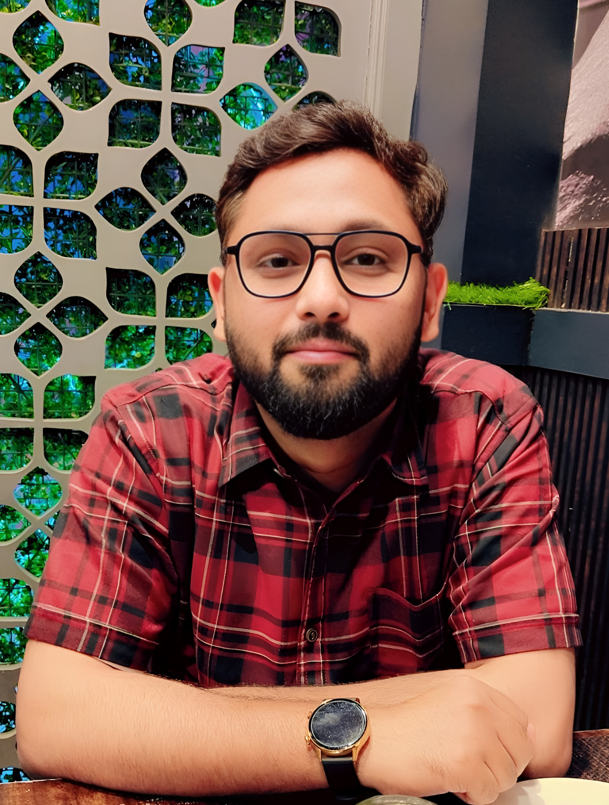

Agentic AI for Engineering
AI copilots for PSS/E workflows and PLC/SCL code intelligence, including planning, code generation, execution verification, repair, and efficient context use.
LLM Agents · Industrial AI · Trustworthy AI · Multimodal Reasoning
I build AI systems that combine foundation models, structured knowledge, reasoning and tool use. My work spans agentic AI for industrial engineering, trustworthy LLM evaluation, multimodal medical reasoning, and knowledge-grounded language systems.

Research interests
I use SAFE as a simple way to communicate the ideas that recur across my research in agentic AI, multimodal reasoning, trustworthy evaluation, and knowledge-grounded systems.
My research asks how AI systems can recognize uncertainty and failure, verify intermediate decisions, seek missing evidence, and use tools or human input when needed.
Robustness, safety, calibration, fairness, and context integrity in foundation models.
Grounding decisions in structured knowledge, visual evidence, and causal or neuro-symbolic reasoning.
Planning, tool use, execution verification, repair, and efficient reasoning for long-horizon AI systems.
Research areas
These themes connect my recent industrial AI work with my longer-term research in multimodal reasoning, knowledge grounding, and trustworthy decision support.
AI copilots for PSS/E workflows and PLC/SCL code intelligence, including planning, code generation, execution verification, repair, and efficient context use.
Evaluation of trustfulness, fairness, robustness, safety, context integrity, calibration, and failure behavior in large language models.
Vision-language reasoning with causal structure, knowledge grounding, evidence alignment, and decision support for medical AI.
Experience
My path connects medical NLP, computer vision and multimodal reasoning with recent industrial AI and agentic-system research.
IIIT Bangalore · Siemens Technology collaboration
Research on LLM-based and agentic AI systems for industrial engineering, including AI copilots, PLC/SCL knowledge representations, trustworthy LLM evaluation, and efficient coding-agent workflows.
Center for Research in Computer Vision, University of Central Florida
Developed multimodal AI for medical visual question answering, causal reasoning, visual grounding and geolocation-aware conversational systems.
Indian Institute of Technology Patna
Knowledge-grounded medical question answering and dialogue generation using knowledge graphs, logical reasoning and neural language models.
Selected highlights
A snapshot of recent work across trustworthy LLMs, multimodal AI and industrial agentic systems.
Collaborate
I am interested in opportunities around agentic AI, trustworthy foundation models, multimodal reasoning, AI for science/healthcare, and industrial AI.
aizanzafar@gmail.com